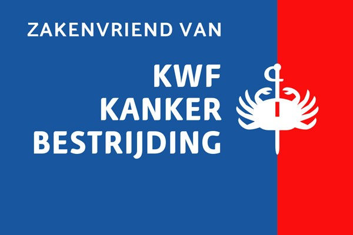

Maatschappelijk & lokaal betrokken
Betrokken bij de Achterhoek.
Obbink is al sinds 1934 onderdeel van deze regio. Daarom vinden we het vanzelfsprekend om ook iets terug te doen voor de omgeving waarin onze klanten, collega’s en families wonen.

Naast onze steun aan lokale verenigingen en evenementen zijn we ook maatschappelijk betrokken als Zakenvriend van KWF.
Dicht bij de regio
We investeren graag terug in de omgeving waar we zelf deel van uitmaken.
Van voetbal, tennis en volleybal tot atletiek, survival, cultuur en lokale evenementen. We ondersteunen tientallen verenigingen en initiatieven verspreid over de Achterhoek. Niet om overal ons logo te laten zien, maar omdat sterke verenigingen en evenementen bijdragen aan een sterke regio.
Lokale clubs waar mensen samen sporten, vrijwilligerswerk doen en elkaar ontmoeten.
Evenementen die dorpen en steden in de Achterhoek bij elkaar brengen.
Ondersteuning van doelen en acties die verder gaan dan sport of commercie.
Waar we betrokken zijn
Tientallen verenigingen, overzichtelijk per plaats.
Om de pagina rustig te houden, hebben we het volledige overzicht per regio gegroepeerd. Open een plaats om de verenigingen en initiatieven te bekijken die we ondersteunen.
Oost Gelre8 verenigingen & initiatieven
- LTC de Kei Tennis
- SV Longa ’30
- RKZSV Zieuwent
- Survivalvereniging Harreveld
- Rotary Achterhoek Oost – Parkinson Run
- Voetbalvereniging Mariënvelde
- KSV Vragender
- SV Grol
Aalten7 verenigingen
- AZSV voetbal
- AD ’69 voetbal
- Sportvereniging Bredevoort
- PSVA
- Bovo Volleybal
- AVA
- Altec
Winterswijk8 verenigingen
- A.V. Archeus
- Concordia muziekvereniging
- FC Trias
- SC Meddo
- FC Winterswijk
- WIKO korfbal
- Buurtvereniging Vosseveld
- Avanti
Eibergen & Beltrum6 verenigingen
- FC Eibergen
- Volleybalvereniging REVOC Rekken
- TV Mallumse Molen
- VIOS Beltrum voetbal
- Sportclub Rekken
- Survivalvereniging Beltrum
Ruurlo4 verenigingen & evenementen
- Reurpop
- VV Ruurlo voetbal
- Oranjevereniging Ruurlo – Oranjefeest Ruurlo
- Tennisvereniging Ruurlo
Borculo & Barchem6 verenigingen
- EGVV voetbal
- VV DEO voetbal
- Tennisvereniging De Koem
- Gemini
- UNO ’21 voetbal
- SVBV Barchem
Doetinchem4 verenigingen
- Argo Atletiek
- DZC
- De Graafschap
- TC Tennis Zuid
Didam5 verenigingen
- DSV Relax
- DVC
- Turnhal Didam
- TPV Didam
- De Sprinkhanen
Varsseveld2 verenigingen & evenementen
- Sportclub Varsseveld
- Hootchiekoe Festival
Dit overzicht is gebaseerd op de verenigingen en evenementen die Obbink momenteel heeft aangeleverd voor deze pagina. Het kan in de toekomst worden uitgebreid of bijgewerkt.